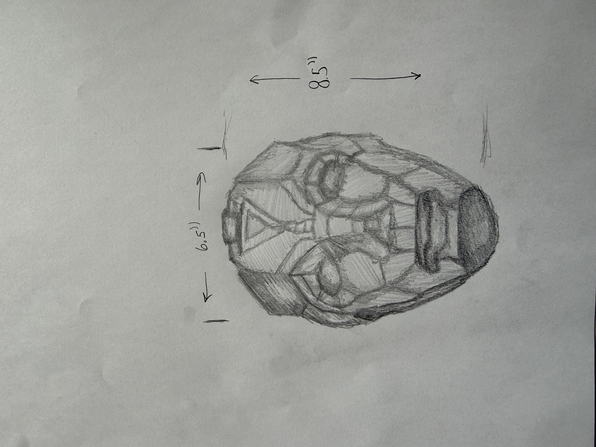
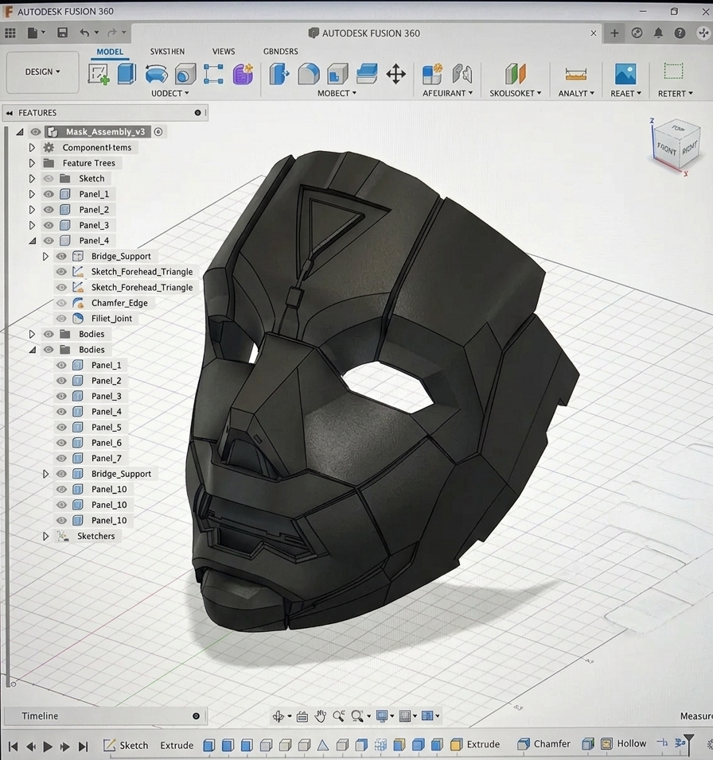

Step 1
Concept & Ideation
Every product starts with an idea. Initial concepts begin as hand-drawn sketches focused on shape, proportion, usability, and vision.
Concept to Creation
Explore the full workflow from hand-drawn sketch to CAD development and final manufactured product on its own dedicated tab.
Concept to Creation
The journey is shown in three cinematic phases, each stage highlighting the craftsmanship that turns design intent into real product reality.
Workflow progression

Every product starts with an idea. Initial concepts begin as hand-drawn sketches focused on shape, proportion, usability, and vision.

The concept is transformed into a precision-engineered CAD model using advanced 3D design tools. Every surface, angle, and assembly is refined for manufacturability and performance.

The finalized design moves into production through advanced manufacturing processes, resulting in a high-quality finished product ready for real-world use.